This challenge was available only via the torrent -- probably because of its large size (close to 4GB).
Let's go!
Decompress and run
Decompressing the challenge's .tar.gz gets you this:
> $ file *
challdeb.img: QEMU QCOW Image (v2), 6442450944 bytes
qemu: directory
run_and_solve_me: ELF 64-bit LSB executable, x86-64, version 1 (SYSV), dynamically linked (uses shared libs), for GNU/Linux 2.6.24, BuildID[sha1]=e48460126ab69b5e66be84e58f22e5f81d187a3d, stripped
We've got a QCOW2, a QEMU source folder (with already-built binaries), and an ELF that's begging to be run.
Executing run_and_solve_me starts QEMU (and doesn't appear to do anything else, according to strace and some quick poking with IDA Pro)
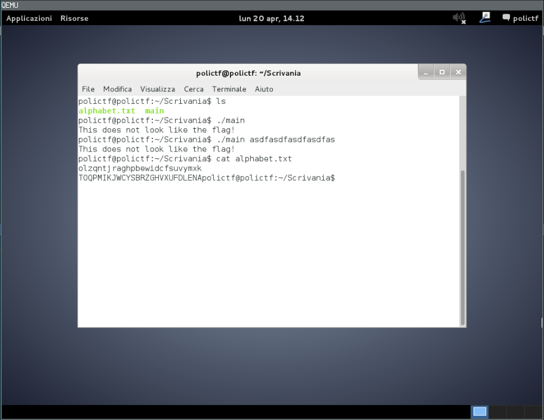
As you can see, there are two files. Running main doesn't seem to produce anything useful.
PANDA & QEMU
The QEMU arguments are suspicious:
./qemu/i386-softmmu/qemu-system-i386 -m 1G -hda ./challdeb.img -panda challenge -loadvm challenge
-loadvm challenge is loading a snapshot... But what's the -panda challenge argument about? I've heard of PANDA before, which is based off QEMU... but I've not yet used it. However, the PANDA documentation seems to indicate that the -panda argument is used to load PANDA plugins.
So, there must be a PANDA plugin called challenge that's getting loaded from somewhere.
> $ find . -name "*challenge*"
./qemu/i386-softmmu/panda_challenge.so
./qemu/i386-softmmu/panda_plugins/challenge.o
./qemu/i386-softmmu/panda_plugins/panda_challenge.so
Let's look at the panda_challenge.so from the panda_plugins directory, first -- that seems to be where all the other plugins are. Open it in IDA and look at the strings...
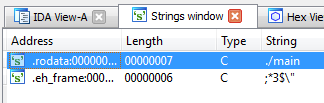
See the ./main string? That looks interesting -- that's the command we type to run main! Let's look at where it's used in panda_challenge.so (double-click on the string, and then press x with the cursor on the string to show x-refs). It's a function called exec_callback.
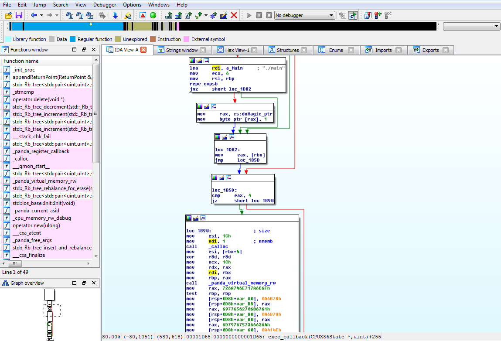
Interesting... PANDA is a record-and-replay and/or malware analysis tool. So if I had to guess, I'd guess that this PANDA plugin is watching for main to execute... and then doing... something? There's a call to _panda_virtual_memory_rw. Again, guessing... maybe it's marking memory in main as read/write? There are a bunch of mov instructions right below the _panda_virtual_memory_rw call. Turning them into characters (highlight with cursor and press R makes them a little more sensible:
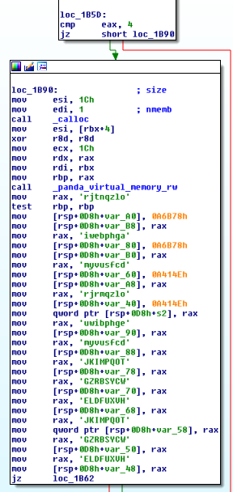
Hm, those "strings" look surprisingly similar to the alphabet.txt strings. Lowercase characters followed by uppercase characters. Many of them are even in the same order. It's probably time to drop main into IDA and have a look at what's going on. (I'm sure there are many ways to get main out of challdeb.img, but I chose to use qemu-nbd to mount the image. Once mounted, I simply copied main elsewhere.)
Main
It's not hard to find the main function in the main binary -- just take a look at the strings (there aren't many) and follow x-refs for the ones that showed up when we ran main earlier.
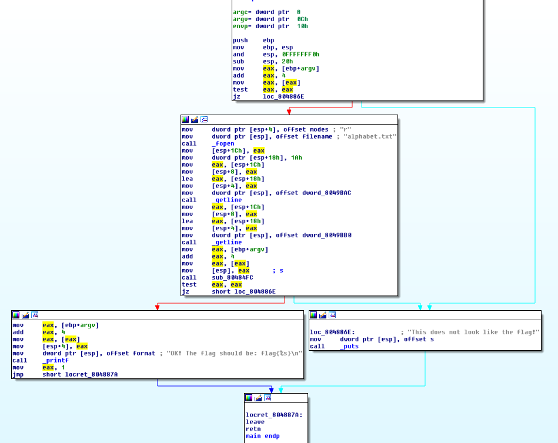
You can immediately see that staying on the 'left' path towards the string OK! The flag should be: flag{%s}\n is probably what we want to have this program do.
To get there, the program must pass two checks. The first, in the topmost block, is simply checking to see if there is an argument in argv[1]. If it's null, the program takes the exit path. So, we are probably supposed to pass main something on the command line since that would make argv[1] non-null.
Next, we need to pass the check that is sub_80484FC. But before this call we can see references to alphabet.txt, and some calls to _getline. It's probably safe to assume that the program is reading in the contents of alphabet.txt. Note the arguments to getline: The file descriptor [esp+8], the length [esp+4] (0x1A == 26, which is the length of the alphabet...), and the destination [esp], which is a double-pointer, according to the getline documentation. This information might be important later.
Ok, let's take a look at sub_80484FC. In the above screenshot we can see that its only argument is argv[1].
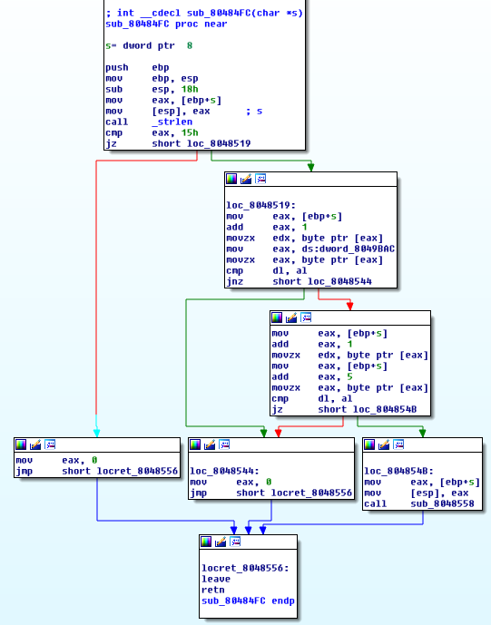
Again, the path we want to take is pretty clear -- we want to stay to the right, this time, which will bring us to call sub_8048558 instead of just returning 0. That means we must pass a strlen check; our input must be 0x15 characters long... 21 characters, in decimal.
Then, we must pass a number of cmps. I'll cut to the chase: sub_8048558 is full of more compares like this... and it calls another function (sub_804860C) with a lot more of the same. I'll walk you through these two... but I'll leave the exercise of running through the rest up to you.
I've commented the assembly for the first cmp below:
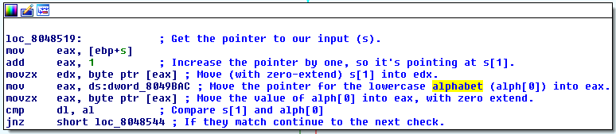
Remember that dword_8049BAC was the destination location for the first getline call, so it contains a pointer to the lowercase alphabet. So what is alph[0] going to be? If the first line of our alphabet.txt is olzqntjraghpbewidcfsuvymxk, then alph[0] is the character o. Therefore, to pass the check, s[1] must be the character o.
So far, we know that our input should be 21 characters, and that the second character should be o. Here's the second check:
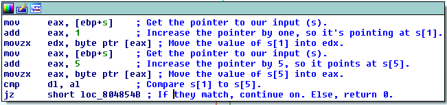
So what's s[1]? It's o. Therefore, s[5] (the 6th character in your input) should also be o.
If you continue on through the rest of the checks in sub_8048558 and sub_804860C, you will should deduce that your input to the program should be: not_so_easy_try_again.
Running ./main not_so_easy_try_again on my host system confirms this:
> $ ./main not_so_easy_try_again
OK! The flag should be: flag{not_so_easy_try_again}
Of course I tried to submit that flag to the scoreboard... and it didn't work. Of course things aren't that easy.
Final Steps
Our next step should be to run this same command inside the bundled Debian VM:
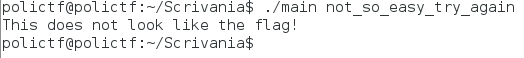
Remember the PANDA plugin we looked at earlier? At this point I suspected it must be meddling with the alphabet.txt strings at some point. I decided to try to use GDB to see if I could figure out what was going on.
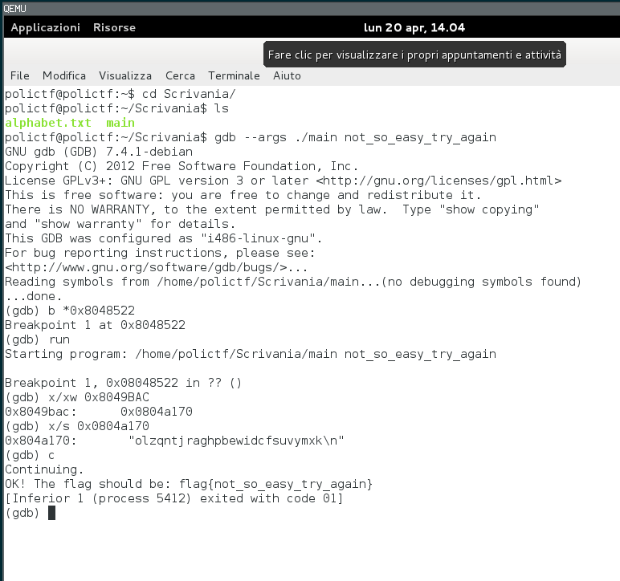
I set a breakpoint for the first time dword_8049BAC is used -- I wanted to check the alphabet.txt string. It's the same as my host machine (olzqntjraghpbewidcfsuvymxk)! And letting the program run through with that input gives us the same output we got on our host machine!
I wonder if PANDA is somehow able to determine (directly or through inference) whether or not the program is being debugged... Let's try a trick.
We'll patch main to stop in an infinite loop at about the same spot that we set our breakpoint. \xeb\xfe is a very simple infinite loop that translates to jmp .. That is, jump to the current instruction. Then we'll attach to the program with a debugger and see if the alphabet.txt lines have changed.
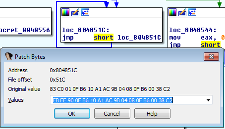
Don't know how to patch binaries with IDA? Check this out.
The Debian VM has networking, so you can just wget the patched binary onto the machine (run sudo python -m SimpleHTTPServer 80 on your host).
Run main, then attach to it with gdb...
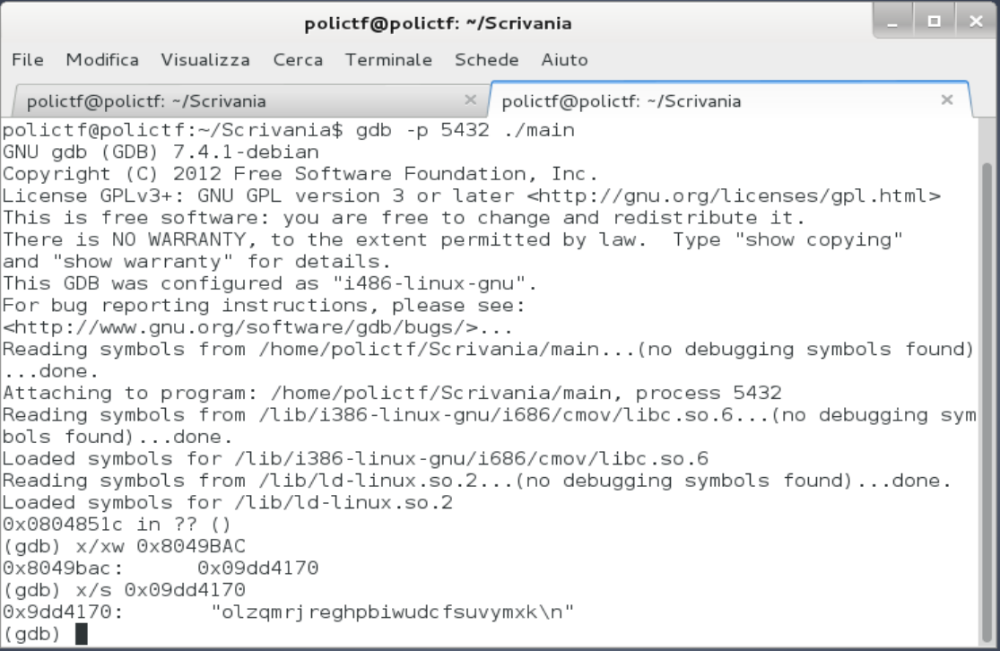
Look, the string is different!
Now: olzqmrjreghpbiwudcfsuvymxk
Before: olzqntjraghpbewidcfsuvymxk
Let's write a Python script to solve this for us.
orig = "not_so_easy_try_again"
a1 = "olzqntjraghpbewidcfsuvymxk"
a2 = "olzqmrjreghpbiwudcfsuvymxk"
l = []
for char in orig:
if char is "_":
l.append(char)
for c in range(0, len(a1)):
if char == a1[c]:
l.append(c)
for i in l:
if str(i) == "_":
print "_",
else:
print a2[i],
print "\n"
Running script print out m o r _ s o _ i e s y _ r r y _ e g e u m.
Solved
And running the unpatched main in the VM without a debugger using the above as input solves the challenge. The flag is flag{mor_so_iesy_rry_egeum}.
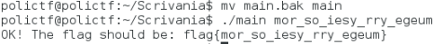